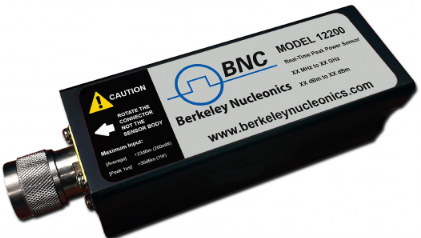
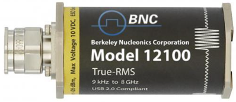
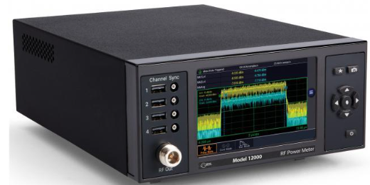

Chapter 11: Berkeley Nucleonics Power Measurement Solutions
Berkeley Nucleonics has been building precision electronic instrumentation since 1963. We started in pulse generation for nuclear research, expanded into RF and microwave, and have spent the last decade building a USB power sensor line that we think stands at the top of the industry. This chapter is the closest thing to a product tour you will find in a reference book, and we make no apologies for it. If you are reading this, you are probably trying to pick a sensor. Here is what we would pick, and why.
11.1 A Word on Our Design Philosophy
We believe a power sensor should have three properties.
It should be fast to set up. A sensor that needs to be zeroed, reference-checked, and warmed up before every measurement steals an hour from every working day. Our sensors use a thermally stabilized, two-path square-law diode architecture that requires no zeroing and no pre-use calibration. Plug it in. Measure. Move on.
It should be honest about what it measures. Specifications should hold across real signals, not just the one sine wave that looks best in the marketing brochure. Our dynamic range, video bandwidth, and rise time numbers are all tested against representative modulated signals, and the test conditions are on every datasheet.
It should be boring to integrate. The best sensor in the world is useless if it fights your test framework. Every Berkeley Nucleonics sensor supports USB 2.0 with standard USBTMC, standard SCPI commands, free PowerEye software for interactive use, and optional SPI or I²C for embedded applications. Linux works. Python works. LabVIEW works. Your ATE rack will not notice the sensor is there, which is exactly the point.
Now to the hardware.

11.2 Model 12100 Series USB Average Power Sensors
True-RMS USB average power sensors with no zeroing and no calibration before use.
The Model 12100 series is the heart of the Berkeley Nucleonics power measurement product line. It is the sensor we recommend for the overwhelming majority of RF and microwave power measurements you are likely to encounter, from 9 kHz to 67 GHz, in any modulation format the wireless and radar industries care about. We designed the 12100 around a simple observation: most engineers making power measurements do not need the time-domain envelope trace. They need the number, accurate, fast, and without procedural headaches.
The 12100 delivers exactly that. Plug it in. Read the number. Move on.

Architecture. Each 12100 sensor uses a thermally stabilized, two-path square-law diode detection scheme. Two parallel diode paths cover different power ranges, and the sensor's internal microcontroller stitches them together to deliver a single true-RMS reading across more than 80 dB of dynamic range. Thermal compensation runs continuously, which is why the sensor never needs zeroing and never needs a reference calibration before use. You can connect a 12100 to a live signal and have an accurate reading in milliseconds.
Headline specifications.

- Frequency range: 9 kHz to 67 GHz (model dependent)
- Dynamic range: -60 dBm to +26 dBm (86 dB total) on most variants
- Modulation response: true-RMS on any signal, including CW, AM, FM, QAM, OFDM, multi-tone, 802.11ac / ax / be, LTE, LTE-Advanced, 5G NR, CDMA2000, IS-95, TDMA, and pulsed waveforms
- No zeroing required. No reference calibration required before use.
- Measurement speed: up to 2,000 true-RMS readings per second
- Data logging: tens of millions of timestamped readings in internal memory
- Real-time clock: built in, with battery backup, for autonomous operation
- Triggering: internal, external TTL, time-gated, with programmable gate width and offset
- Unattended Operation Mode (UOP): sensor logs measurements stand-alone without a connected host
- Interface: USB 2.0 (USBTMC and USB HID), with optional SPI, I²C, and LAN
- OS support: Windows, Linux, macOS, with native Python, MATLAB, LabVIEW, and C/C++ drivers
- Connector: Type-N up to 18 GHz, 3.5 mm to 26.5 GHz, 2.92 mm to 40 GHz, 1.85 mm above 40 GHz
The "no zeroing" story, told properly. Traditional power sensors need to be disconnected from the signal, zeroed against an internal reference (sometimes for a minute or more), and reconnected before each session. This costs time, introduces uncertainty, and forces automated test stations to add coaxial switches that can run thousands of dollars per station. The 12100's two-path thermally stabilized diode architecture eliminates the procedure entirely. The sensor knows its own zero, knows its own reference, and knows its own temperature, all in real time. In an automated test environment, this single design choice removes the switching subsystem and recovers tens of seconds per measurement.
True-RMS on anything. Most diode sensors are honest in their square-law region and dishonest above it. The 12100's two-path architecture keeps both paths in their accurate operating regions across the full dynamic range, which is why the sensor delivers true-RMS readings on any modulation, regardless of crest factor. A 12 dB peak-to-average OFDM signal reads the same true average as a CW signal of equal mean power. So does a TDMA burst. So does a chirp. So does a noisy environmental signal. This matters: it is the property that lets you trust a single measurement on any waveform you encounter.
Time-gated triggering. The 12100 supports gated measurements relative to an internal or external trigger edge. Set a gate offset, set a gate width, and the sensor reports the true average power within that time window. This is how you measure the average power of a single LTE slot, a TDMA burst, a radar inter-pulse interval, or a specific portion of a switching transient. You get a clean, true-RMS number for exactly the part of the signal you care about, without needing a full pulse-profiling sensor.
Buffered sweep mode. For automated test applications, the 12100 can be armed in buffered mode to capture a sequence of triggered measurements into internal memory, then return them all in a single bulk transfer. Sweeping a signal generator across 1,000 frequencies and reading the power at each one takes milliseconds rather than seconds.
Linux, by design. Every 12100 ships with native Linux support. The sensor presents as a USBTMC and USB HID device, drivers are open and documented, and our Python and C/C++ libraries are tested on Ubuntu, Debian, and CentOS. Production engineers running headless test controllers love this. So do field service teams using Raspberry Pis as portable measurement platforms.
Embedded integration. The 12100 series offers optional SPI and I²C interfaces alongside the standard USB. With these options, the sensor becomes a drop-in amplitude reference inside an embedded product, with no need for an intermediate USB host. UOP mode lets the sensor accumulate readings autonomously and download them later. This combination is rare in the industry and has made the 12100 the sensor of choice for OEM applications in test instruments, satellite ground stations, and unattended remote monitoring.
Ideal applications include signal generator calibration, transmitter power monitoring, base-station EVM and ACLR support measurements, satellite uplink and downlink power verification, regulatory compliance testing, EMC pre-compliance and final compliance, production-line transmit-power verification, antenna gain and pattern measurement, network-element installation and maintenance, military and aerospace radio acceptance testing, medical RF transmitter qualification, broadcast transmitter monitoring, and any embedded amplitude reference where size, integration, and traceability all matter.
The practical win. Engineers who switch to the 12100 series routinely tell us that they reclaim 15 to 30 minutes per day that used to disappear into zeroing and referencing. Across a year, that is more than a full work-week of recovered engineering time per person. Across a production line of twenty stations, it is the difference between making and missing a quarterly throughput target.
11.3 The 12100 Variants at a Glance
The 12100 series ships as a family of frequency-rated variants. All variants share the same architecture, the same accuracy, the same software, the same SCPI command set, and the same embedded options. They differ only in their frequency range and connector. Pick the variant whose top frequency comfortably covers your application, and you are done.
| Variant | Frequency Range | Top Power | Bottom Power | Typical Connector |
|---|---|---|---|---|
| 12100-6 | 9 kHz to 6 GHz | +26 dBm | -60 dBm | Type-N |
| 12100-12 | 9 kHz to 12.5 GHz | +26 dBm | -60 dBm | Type-N |
| 12100-18 | 9 kHz to 18 GHz | +26 dBm | -60 dBm | Type-N |
| 12100-26 | 9 kHz to 26.5 GHz | +26 dBm | -60 dBm | 3.5 mm |
| 12100-40 | 9 kHz to 40 GHz | +26 dBm | -55 dBm | 2.92 mm |
| 12100-50 | 9 kHz to 50 GHz | +20 dBm | -50 dBm | 2.4 mm |
| 12100-67 | 9 kHz to 67 GHz | +20 dBm | -45 dBm | 1.85 mm |
All variants are factory multipoint-calibrated, NIST-traceable, and ship with frequency-response correction loaded into nonvolatile memory. Recertification is recommended every 12 months and is available with a two-week turnaround through any Berkeley Nucleonics service center.
Common features across the variants:
- True-RMS measurement on any modulation
- 86 dB dynamic range (slightly reduced on the 50 and 67 GHz models due to connector and detector physics)
- 2,000 readings per second
- Time-gated triggering
- Buffered sweep mode
- Internal real-time clock and unattended-operation mode
- USB 2.0, with optional SPI, I²C, and LAN
- Linux, Windows, and macOS support
- PowerEye software included
- Three-year standard warranty
11.4 Application Case Studies
Six real problems, six real 12100 selections, and the reasoning behind each.
Case Study 1: 5G NR Base Station Power Amplifier Average Power Characterization
Problem. A small-cell 5G NR base station manufacturer needs to verify mean output power across the 3.5 GHz n78 band on every shipped unit, against a calibrated reference. Measurements must be reproducible in production and repeatable in the field, and they must complete in under 5 seconds per band point.
Solution. A Model 12100-6 sensor at the amplifier output, controlled over USB by the production test controller. Time-gated triggering captures the true-RMS power inside a defined slot of the 5G frame; PowerEye scripting automates the band sweep and logs results to the QC database. Time to full characterization per unit: 2.5 seconds.
Why it works. The 12100's true-RMS architecture delivers an honest mean-power reading on a 100 MHz 5G NR channel without crest-factor errors. The same SCPI script runs in the lab and on the production line, so the lab and the line agree to better than 0.1 dB.
Case Study 2: Pulsed Radar Average Power and Duty-Cycle Verification
Problem. A radar transmitter manufacturer needs to verify that the time-averaged output power and duty cycle of every shipped unit match the specification, with traceable accuracy. Pulse-shape parameters are verified separately on a development bench; the production line cares about average power and stability over a thousand-pulse window.
Solution. A Model 12100-26 sensor at the radar output, time-gated from the radar's transmit-gate signal to integrate true-RMS power over the active pulse window. PowerEye averages 1,000 gated readings per unit and produces a single pass/fail value plus a duty-cycle figure. Test time: 3 seconds per unit.
Why it works. Time-gated triggering on the 12100 is exactly the right tool for "what is the average power of the active pulse, ignoring the off-time?" The sensor thermal stability holds calibration across the long production day, so consecutive units measure consistently without intervention.
Case Study 3: EMC Compliance Testing
Problem. An EMC test lab needs to verify that the immunity test signal applied to devices under test holds its specified amplitude over the full two-hour test sweep. Drift of more than 0.5 dB triggers a retest.
Solution. A Model 12100-26 sensor permanently installed at the output of the immunity source, reading every 10 seconds and logging to the lab's QC database. Time-gated measurements confirm amplitude during each step of the sweep. Built-in real-time clock timestamps every reading.
Why it works. The 12100's long-term stability and its built-in clock give the lab a continuous, auditable record. No zeroing interruptions. No thermal drift. The same sensor doubles as a calibration check at the start of every test session.
Case Study 4: High-Volume Manufacturing Test
Problem. A wireless module manufacturer runs 20,000 modules per day through a production line. Each module needs a transmit-power verification at four frequencies and three power levels. The entire measurement must complete in under 500 ms per module.
Solution. A Model 12100-18 sensor on each test station, integrated over the station's local Ethernet LAN to a central test controller. Hardware triggering, buffered sweep mode, and zero setup time between readings. Per-module test time: 180 ms.
Why it works. No zeroing, no calibration between measurements, and buffered-sweep support deliver the throughput the production line needs. The small form factor means the sensor fits in cramped fixturing. Linux support means the test controller can run whichever distribution the plant standardized on.
Case Study 5: Satellite Uplink Monitoring
Problem. A satellite operator must monitor the transmitted power of every uplink amplifier to hold signal strength within a 0.2 dB tolerance across a day-night temperature swing.
Solution. A Model 12100-40 sensor at the output of each amplifier, reading into a monitoring system every second. Automatic alerts on deviations. Real-time clock timestamps every reading. UOP mode keeps the sensor logging if the host monitoring system goes offline for service.
Why it works. The sensor's thermal stability holds the reading within tolerance even as the equipment rack cycles 20 °C across a day. Continuous logging without zeroing interruption means no gaps in the record. The integrated real-time clock provides the audit trail satellite operators need for regulatory compliance.
Case Study 6: Embedded Amplitude Reference in an OEM Test Instrument
Problem. A test-equipment manufacturer is designing a next-generation network analyzer and needs an embedded amplitude reference accurate to 0.2 dB from 9 kHz to 26.5 GHz. The reference must integrate with the instrument's microcontroller, run from the instrument's main power supply, and require no factory recalibration over the instrument's three-year warranty.
Solution. A Model 12100-26 sensor integrated via the SPI option, reporting amplitude readings to the host microcontroller as part of the instrument's internal measurement chain. UOP mode is enabled on power-up so the sensor is immediately operational. The 12100's NIST-traceable factory calibration is incorporated into the instrument's overall calibration certificate.
Why it works. SPI integration eliminates the need for a USB host inside the instrument, simplifying the design. The 12100's no-zero, no-cal architecture means the embedded reference is always ready, with no warm-up procedure required at instrument power-up. Long-term thermal stability matches the instrument's three-year recertification interval.
11.5 Selection Guide: Picking the Right 12100
Work through these four questions in order.
1. What is the top frequency I need to support? - Up to 6 GHz: 12100-6 (Type-N, lowest cost). - Up to 12.5 GHz: 12100-12 (Type-N). - Up to 18 GHz: 12100-18 (Type-N, the most popular variant for cellular and satellite work). - Up to 26.5 GHz: 12100-26 (3.5 mm). - Up to 40 GHz: 12100-40 (2.92 mm). - Up to 50 or 67 GHz: 12100-50 or 12100-67 (2.4 mm or 1.85 mm).
Pick the lowest-frequency variant that comfortably covers your application. Higher-frequency variants cost more and use connectors that are mechanically less forgiving in everyday lab use.
2. What is my minimum signal level? - Down to -40 dBm: any variant. - Down to -60 dBm: any variant up to 40 GHz. - Below -50 dBm at mmWave: specify the 12100-50 or 12100-67 with the extended-low-range option.
3. How will I trigger it? - Free-running average measurements: default mode, no extra hardware required. - Time-gated bursts (TDMA, LTE, radar inter-pulse): use external TTL trigger plus the gate offset and width settings. - Synchronized to a system clock: use the LAN option for IEEE 1588 PTP timestamping.
4. How will I integrate it? - Bench, interactive: any 12100 plus the included PowerEye software. - Automated test with SCPI scripts: any 12100 over USB; the SCPI command set is compatible with most legacy power-meter automation. - Embedded in a product: 12100 with the SPI or I²C option. - Networked test rack: 12100 with the LAN option. - Long-term unattended logging: enable UOP mode on any 12100.
When in doubt, call us. A five-minute conversation with an application engineer saves weeks of trial and error. Our support number, our live chat, and our response email are listed on the back cover, and we answer all of them.
11.6 Integration, Software, and Support
PowerEye Software. Free, full-featured, and updated continuously. Runs on Windows, Linux, and macOS. Supports every Berkeley Nucleonics sensor, with interactive configuration, live traces, logging, statistical analysis, and pass/fail evaluation. Includes SCPI terminal for scripting development and export to CSV, Excel, and MATLAB.
SCPI Command Set. Standard SCPI with a superset compatible with most legacy power meter automation scripts. Migration from older benchtop meters is typically a matter of hours, not weeks.
SPI and I²C Integration. For OEM applications, the 12100 series offers optional SPI and I²C interfaces alongside the standard USB. This makes the sensor a drop-in amplitude reference inside an embedded product, with no need for an intermediate USB host. Unattended Operation Mode (UOP) lets the sensor stand-alone log tens of millions of measurements without a connected host.
Software is always free. We do not charge licensing fees for instrument software, now or ever. Updates are free. Feature additions are free. If we add a new measurement mode, existing sensors get it.
Support. Live application support, phone and email, Monday through Friday, worldwide business hours. Our application engineers have an average of 15 years in RF measurement and can talk intelligently about anything from basic connections to multi-sensor synchronization schemes. We also offer no-cost remote support sessions for complex integrations.
Training. The Berkeley Nucleonics Academy offers short, focused online courses on RF power measurement, many based on material in this book. Many courses include CEU credit and completion certificates. If your team needs a standardized baseline of training, start there.
Warranty. Three years standard, extendable to five. Calibration is traceable to NIST. Annual recertification is available through our service centers with a two-week turnaround.
Getting started. Visit www.berkeleynucleonics.com or call 800-234-7858. We are happy to talk.